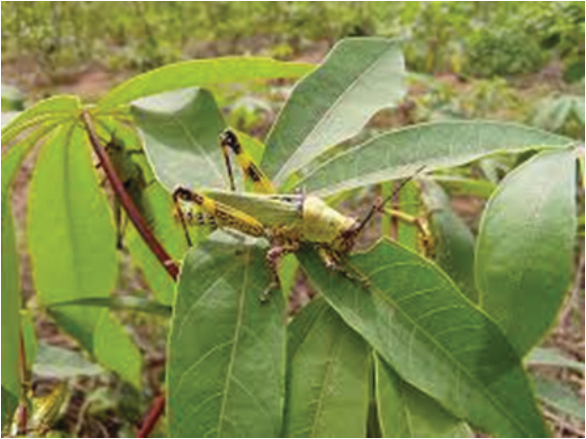

Figure 3.9: Variegated grasshopper on cassava leaf
Source: https://plantwiseplusknowledgebank.org/doi/10.1079/pwkb.20167800867
Disease management
Cassava is susceptible to various diseases that result in reduced yield and lower
quality of its tubers. The most harmful are viral infections, particularly Cassava
brown streak disease (CBSD) (Figure 3.10) caused by the Cassava brown streak
virus (CBSV) and Cassava mosaic disease (CMD) caused by the Cassava mosaic
virus (CMV) (Figure 3.11).
Management: The disease can be managed by inspecting cassava fields and
removing (roguing) infected plants to prevent the virus from spreading to
healthy plants. Also, cleaning working tools and equipment to avoid mechanical
transmission of the virus. Implementing quarantine measures to prevent the
introduction of infected planting material from other regions. Crop rotation and
controlling aphids. Planting during periods less favourable for whitefly vectors
can help reduce infection rates.